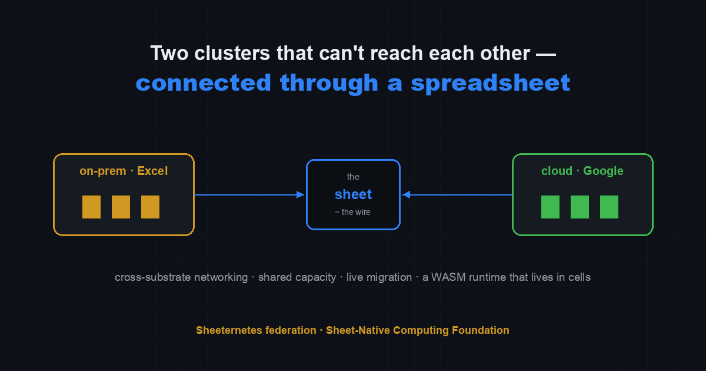
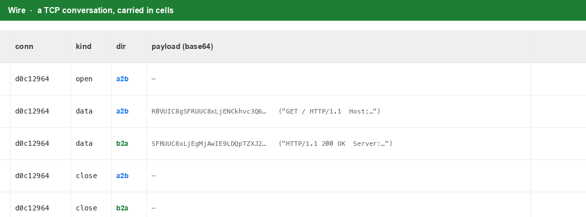
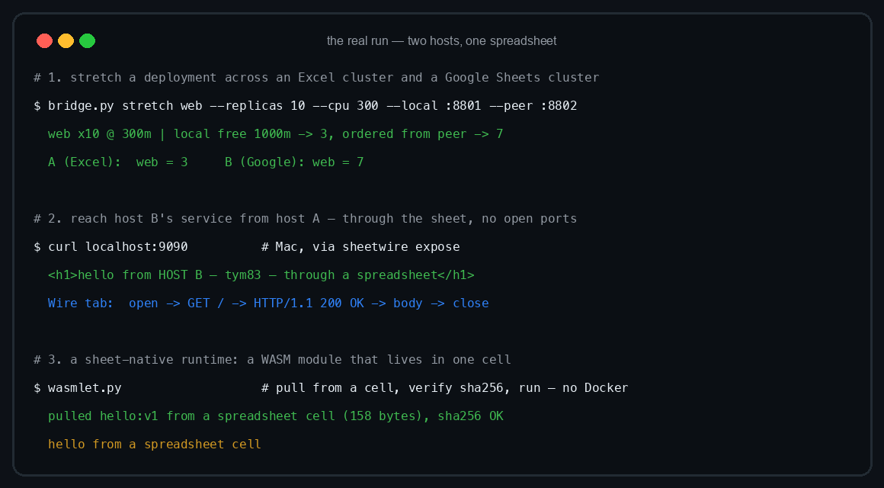
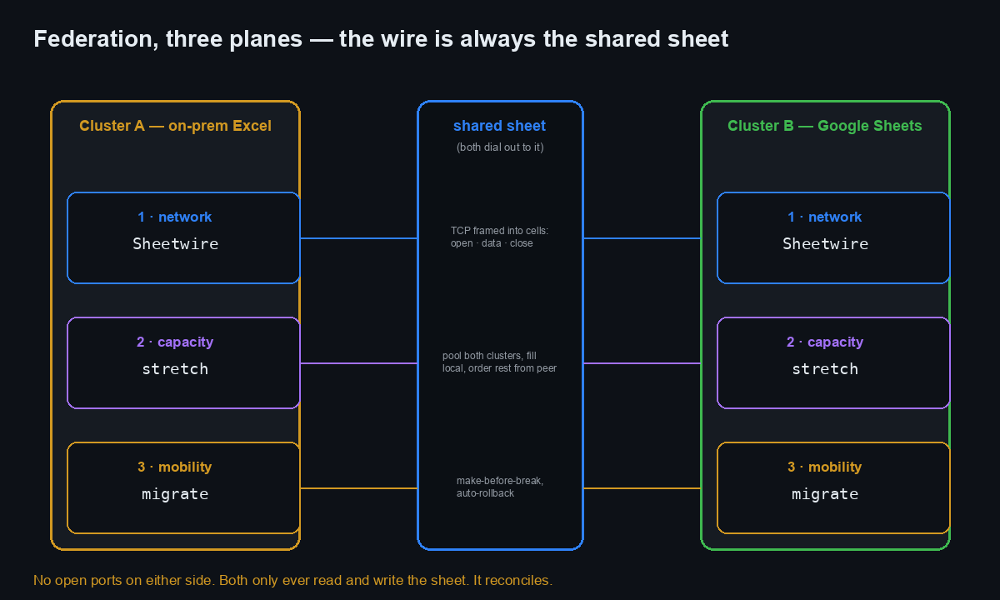

There’s a particular kind of problem I keep coming back to, and it took me a while to admit that what draws me to it isn’t the engineering. It’s the shape of it. Two things that cannot reach each other. Both real, both running, both perfectly capable — and separated by something neither of them chose. A firewall. A network that only lets you speak outward, never listen. Distance, dressed up as configuration.
That’s the honest description of federating two clusters. One lives on-prem, a file on somebody’s disk. The other lives in the cloud, a document in Google’s data centers. They could not be more different in temperament, and neither can be dialed into from the outside. If you want them to work as one, you have to find a way for them to reach each other across a gap that, by every normal rule, they’re not allowed to cross.
For a long time I thought the answer had to be a tunnel — something you build and hold open, a wire you run between them. But you can’t run a wire to a place that won’t let you knock. So I stopped trying to connect them to each other and asked a smaller question: is there any one place they can both already reach? Somewhere ordinary, that neither has to open a door for?
There is. They can both reach a spreadsheet.

New here? This is Sheeternetes — a container orchestrator whose control plane lives inside a spreadsheet: Deployments, Nodes, Pods are tabs, a scheduler reads and writes cells, real Docker containers run on the other end. It’s part of the Sheet-Native Computing Foundation (SNCF), a working parody of the CNCF where the whole stack lives in spreadsheets. sncfoundation.github.io · github.com/sncfoundation
The wire is the sheet
Here’s the idea in one line: if both clusters can reach a shared Google Sheet, the sheet can be the wire. You don’t route packets between the two machines. You write them into cells, and the other side reads them out.
The whole thing is a small userspace TCP relay,
sheetwire.py, with two roles. One side
serves — it watches the sheet for someone asking for a
service, dials the local port, and streams the answer back into cells.
The other side exposes — it opens a local port, and
anything you send to it gets framed into the sheet, addressed to the
peer.
# side B, the one that hosts the service
sheetwire.py serve --wire <shared-sheet-id> --service web --target 127.0.0.1:8080
# side A, the one that wants to reach it
sheetwire.py expose --wire <shared-sheet-id> --service web --listen 127.0.0.1:9080
# then, on side A:
curl localhost:9080 # and it reaches side B's service — through the cellsThe transit is a tab called Wire, append-only, one row
per frame:
conn | kind (open | data | close) | dir (a2b | b2a) | service | payload (base64)That’s the whole protocol. A connection opens, bytes go across as
data frames in one direction or the other, and a
close ends it. The beautiful, slightly absurd part is what
this means at the wire level: a TCP conversation, chopped into base64,
laid out as spreadsheet rows.

Read those rows and you can watch the request leave, cross, and come
back. GET / HTTP/1.1 written into a cell.
HTTP/1.1 200 OK written back. The body. The close. An HTTP
exchange, preserved as a little transcript in a spreadsheet, which you
can scroll through after the fact like a letter.
Neither side ever opens a port. Both only ever reach outward, to the same quiet place, and that turns out to be enough. There’s something I find almost moving about that, if you’ll let me be soft about infrastructure for a second: the connection doesn’t come from forcing a way in. It comes from both of them, independently, choosing to show up somewhere in the open.
Making it real — and the parts that fought back
I don’t trust a demo I can’t reproduce, so let me give you the real one, including the places it bit me. None of the difficulties were the grand kind. They were the small, stubborn, particular kind — the ones that don’t yield to cleverness, only to patience and paying closer attention.
The race that only happened because both sides cared at
once. The very first run, both roles started at the same
instant and both tried to create the Wire tab. One won; the
other got a flat “a sheet with that name already exists” and
fell over. Two processes reaching for the same thing at the same moment
and colliding — the fix was just to let the one that lost the race carry
on instead of taking it as an insult:
try:
ss.batchUpdate(..., {"addSheet": {"properties": {"title": "Wire"}}}).execute()
except HttpError as e:
if "already exists" not in str(e): raise # the other side won the create — fineThe wall that wasn’t in the code at all. On my Mac, the first end-to-end attempt with a real containerized backend simply wouldn’t connect, and the logs were clean, which is the worst kind of failure. It took me longer than I’d like to admit to realize it had nothing to do with Sheetwire: macOS can’t route to a Docker container’s own IP from the host. The relay was fine. The network I was standing on wasn’t. A good reminder that when something won’t reach something else, the fault is usually not in either of them — it’s in the ground between.
The quota, which forces a certain gentleness. Google Sheets lets you write about sixty times a minute. Stream bytes naively and you blow through that in seconds. So the relay batches — it gathers whatever’s outbound and flushes it once per tick, as a single append, and reads on the same rhythm. It makes Sheetwire a deliberately unhurried thing: a channel for cross-cluster API calls, service to service, not a firehose. Honestly, I’ve made peace with that. Not everything worth saying has to be said fast.
And then the two-host test, which is the one I actually cared about — because up to that point everything had been on one machine, and a thing you’ve only ever run beside itself isn’t really connected to anything.
So: my laptop on one side. A Linux box on the other, somewhere else
entirely. A shared sheet as the wire. Getting there had its own small
comedy of friction — the second host wouldn’t git clone
under one policy, then pip refused to touch a managed
environment, then there was no ssh between the two machines, so the
credential had to make its way across by hand. Every step a tiny
negotiation. It usually is, with anything worth connecting to.
Then, from the laptop:
$ curl localhost:9090
<h1>hello from HOST B — through a spreadsheet</h1>That HTML was served by a process on the other host. It crossed the internet exactly once, through a spreadsheet, and neither machine had opened a single inbound port. Two separate computers, behind their own walls, speaking through one shared, ordinary thing they both happened to trust.

I sat with that longer than the result warranted. It’s a
curl. It returns some HTML. And it undid me a little
anyway.
Sharing what you have
Networking is only half of it. Once two clusters can talk, the next thing you want is for them to help each other carry load — for one to be able to ask the other for room, and for the other to give it.
Three planes make one federation, and the wire underneath every one of them is the same shared sheet:

bridge.py stretch treats both clusters as one pool of
capacity. It fills the local cluster as far as it goes, and orders the
rest from the peer:
python3 bridge.py stretch web --replicas 10 --cpu 300 \
--local http://localhost:8801 --local-token secret \
--peer http://localhost:8802 --peer-token secret
# web x10 @ 300m | local free 1000m -> 3, ordered from peer -> 7Ten replicas asked for; the local cluster had room for three; the
other seven were ordered from the peer, and the peer ran them.
From the outside it’s one deployment — one web, ten pods —
that happens to span an Excel file on a disk and a document in the
cloud, two things with nothing in common except a willingness to be part
of the same whole. Sheetwire stitches the Service across both so the
seam doesn’t show.
There’s a plainness to that I keep admiring: one side, at the edge of what it can do alone, simply asks. And the other answers, of course, I have room, give them here. We could stand to be more like our schedulers.
Never letting go of the first hand
The oldest piece of this, and still my favorite, is migration. Moving a workload from one cluster to the other, live, without dropping it.
The rule it follows is called make-before-break, and it’s exactly
what it sounds like. When you move a deployment,
bridge migrate copies it to the target and waits
until it’s actually running there before it takes anything down
on the source. If the target never comes up, the source is left
completely untouched — no harm done, nothing lost. And with
--rollback-window, it keeps watching after the switch, and
if the new home falters, it quietly brings the workload back to where it
was.
You never let go of the first hand until the second one is holding. I don’t think I need to explain why that’s the part I’d want someone to understand about how I try to do things.
The smallest thing, kept whole
One more, because it closes a circle. If the image can live in the cells, can the runtime be more native to the sheet too? The honest answer is WASM. A WebAssembly module can be tiny — small enough to fit, whole and uncut, inside a single cell. And a WASI runtime needs nothing but the bytes: no Docker daemon, no registry, nothing external at all.
wasmlet.py pulls a module straight out of a cell, checks
that it’s exactly what it should be, and runs it:
wasmlet.py --store <sheet-id> --name hello:v1
# pulled hello:v1 from a spreadsheet cell (158 bytes), sha256 OK
# hello from a spreadsheet cellA hundred and fifty-eight bytes. One cell. The entire program, held complete in a space that small, and it runs. There’s a tenderness in things that don’t need to be broken into pieces to be kept.
The honest limits
Because I’d rather tell you the edges than have you find them. The Sheets write quota makes Sheetwire a low-throughput pipe — good for service-to-service calls, wrong for bulk transfer. Federation is eventually-consistent; there’s no consensus across the two substrates. And while the networking is now proven across two real hosts, the full stretched-and-migrating cluster spanning a live Excel↔︎Sheets pair has so far only been run on one machine — a genuine multi-host production run is the next thing. Do not run production on any of this. That was never the point.
What it was actually about
It’s a spreadsheet pretending to be a network, and it works, and I can prove it. But if you’ve read this far you already know the article isn’t really about the quota, or the base64, or the frames.
It’s about two things that were kept apart by walls neither of them built, finding each other anyway — not by breaking through, but by both reaching, patiently, toward the same open place. It’s about the friction being where the meaning was: the race, the wall, the credential passed hand to hand — every one of them a small negotiation, and connecting to anything that matters is nothing but small negotiations, gladly made. It’s about one side asking for room and the other saying yes. It’s about not letting go of the first hand until the second one is holding.
I built a way for two distant, stubborn, utterly different systems to reach each other through something quiet and shared, and then to carry each other’s weight, and never to drop what they were holding. I called it federation. I could have called it something else.
It reconciles.
Reproduce it
Everything is in one repo, and the README walks it end to end:
- The repo: github.com/sncfoundation/sheeternetes-onprem
- Docs: the Cross-substrate networking (Sheetwire), Stretching a cluster, and sheet-native runtime sections of the README
- The code:
sheetwire.py(the wire),bridge.py(status/stretch/migrate/sync),wasmlet.py(the WASM runtime) - The standard it plugs into: SICF — the Sheet Container Initiative
- The foundation: sncfoundation.github.io · github.com/sncfoundation
- Community — Slack sheetncf, Telegram t.me/stncf, LinkedIn company/sheetncf
You need Python 3 with google-api-python-client +
google-auth, a Google OAuth authorized-user JSON, and
wasmtime on PATH for the runtime bit. The only
network requirement is outbound HTTPS to Google on both sides — no
inbound ports, ever.